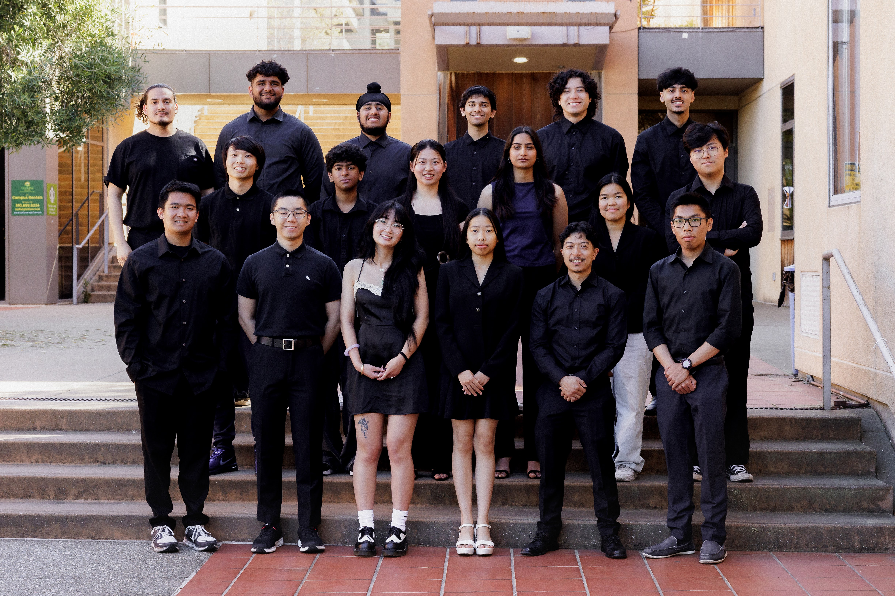
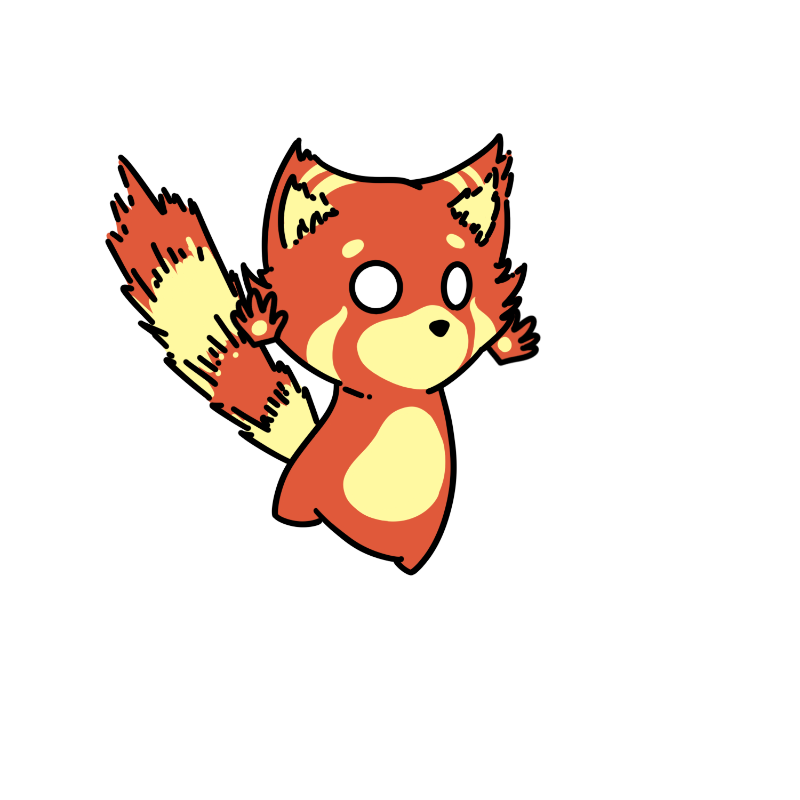

Who We Are
About Ohlone Publications
A student-run publication built to spotlight campus stories, student voices, creative work, and the culture of the Ohlone community.

Our Branch
Student-led storytelling
Ohlone Publications is a student-run branch dedicated to sharing stories, highlighting student voices, and keeping the campus community informed. Through writing, photography, design, and digital media, our team works together to create content that reflects the experiences, interests, and ideas of Ohlone students.
We aim to spotlight campus events, student life, opinions, culture, and timely updates in a way that is creative, informative, and welcoming. As a branch, we value collaboration, expression, and giving students a platform to be seen and heard.
Student Voices
We create space for students to be heard, represented, and celebrated through campus media.
Creative Collaboration
Writers, artists, photographers, designers, and developers all help shape the publication.
Campus Community
Our goal is to connect students with stories, events, ideas, and opportunities happening around them.
What We Do
How the branch comes together
Ohlone Publications is built through collaboration across writing, visuals, design, and digital media. Each part of the branch helps shape how stories are created and shared with the campus community.
Writing
Writers help cover campus events, student experiences, opinion pieces, features, and stories that matter to the Ohlone community.
Photography
Photographers capture the people, events, and moments that bring each edition to life visually.
Design
Designers shape the look of the publication, helping articles feel polished, engaging, and visually cohesive.
Web & Media
Web and media contributors help build the digital side of the branch, from the website to online outreach and publication presence.

Work In Progress
Created for Ohlone students
This section is still evolving, but it can grow into a space for behind-the-scenes content, student highlights, publication process snapshots, or anything else that helps show what the branch is building.
